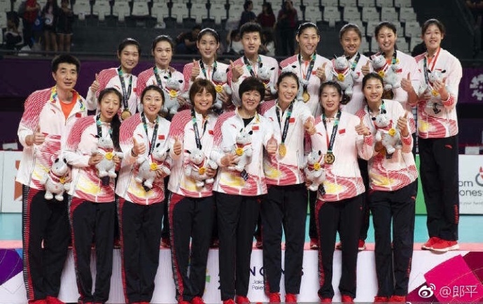
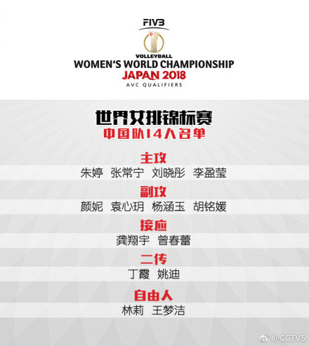

“MVP收割机”朱婷，在世锦赛上能有多大杀伤力？
9月1日，中国女排以全胜且不失一局的成绩闯入亚运会决赛，并最终以3-0横扫对手泰国女排，夺得金牌，这也是中国女排在亚运会历史上的第8个冠军。
排球作为一项集体运动，需要的是球员之间的相互配合，所以女排能够在亚运会中横扫对手，取得全战全胜，每位队员都功不可没，但同样一个不争的事实是，有些个人能力极其突出的队员在球队中发挥的是关键作用，核心作用。而朱婷就是在中国女排中发挥这样的作用的队员。在最近几年的表现上看，也可以说是中国女排的领军人物。
在亚运会的女排比赛中，综合实力较强的是中日韩泰四国，中国队小组赛就遭遇韩国队，但韩国队发挥不佳，主攻手金软景进攻成功率也只有29.73%，而朱婷的进攻成功率为58.33%。在半决赛和决赛中，中国队又分别遭遇日本队和泰国队，均以3-0取胜。在亚运会中日韩泰队员的数据统计中，朱婷扣球得分虽然不及金软景，但扣球效率排名第一位。
而在今年的世界女排联赛上，朱婷也同样大放异彩，扣球成功率和效率在队里高居第一，并且在各国球员的统计中，扣球效率同样排名第一，成功率仅次于塞尔维亚接应博斯科维奇。尤其值得一提的是在南京总决赛中迎战对手荷兰时，朱婷还以36分打破了她的国家队个人单场得分纪录。在国际排联的赛后统计数据中，朱婷的得分、扣球、拦网、发球、防守、一传均榜上有名，堪称六项全能。
正是当打之年的朱婷，在里约奥运周期结束后，开启了她属于她的黄金时期，效力的瓦基弗银行俱乐部夺得 2017年女排世俱杯冠军后，朱婷获最佳主攻+MVP，2017年，朱婷代表中国女排，河南女排和瓦基弗银行共参加比赛69场，持续保持了个人水平，共获得4个最佳主攻和5个MVP，本年度的世联赛和亚运会，又让朱婷大放异彩。不能不说，这是一个属于朱婷的时代。里约奥运会后，朱婷家喻户晓，中国排坛的“一姐“当之无愧，而她创造的奇迹还在继续书写，无论国内赛事还是国际赛事，对于她的赞美之声不绝于耳，她似乎成了中国女排的一支镇定剂。
9月29日，2018女排世界锦标赛就要打响，作为排球重要的三大国际赛事之一，能够取得什么样的成绩自然是万众期待，尤其是在2015和2016年，中国女排已经斩获了世界杯冠军和奥运会冠军的背景下，取得三大赛满贯也是所有人的殷切期望，而作为“世界第一主攻”，朱婷承载了球迷太多的希望。但同样不能忽视的问题是，中国女排在国际比赛中的实力还没有媒体所传达出来的那么强大，世界杯和奥运会的夺冠，给中国女排戴上了太多的光环，但中间暴露的问题只有教练和球员知道，所以最后能获得什么样的成绩，任何人都无法下结论，朱婷固然强大，但还需要整支队伍的相互磨合。
在这次世锦赛最终确定的名单中，被球迷称为“朱元璋”的朱婷，袁心玥，张常宁再次合力迎战。独缺世锦赛MVP的朱婷能否再创辉煌，中国女排又能否获得第三个世锦赛冠军，还需要我们拭目以待。